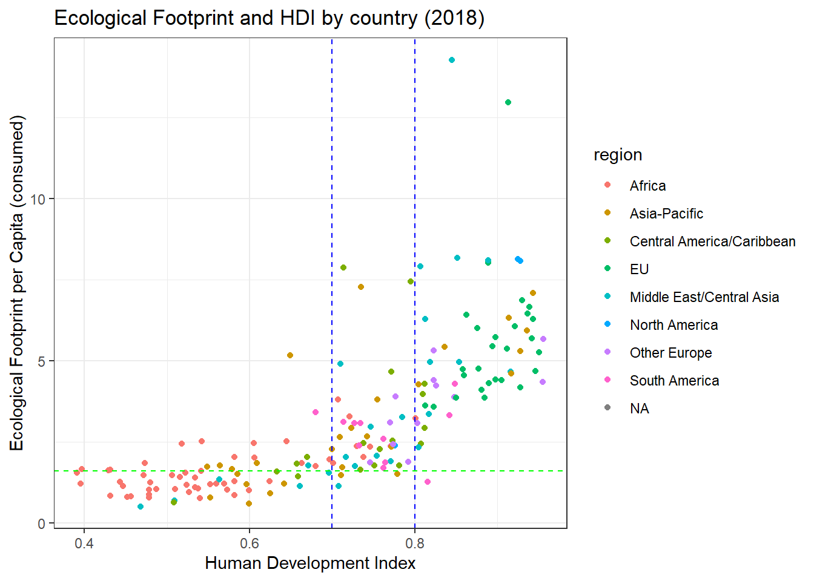

library(leaflet)
# Hat tip to Ian for this Minimap code! Really nice for showing the bigger picture!
leaflet() %>%
addTiles() %>%
addProviderTiles(provider = providers$Esri.WorldImagery) %>%
setView(lng = -118.98, lat = 38.0086, zoom = 9) %>%
addMiniMap(width = 100,
height = 100)18 Ecological Debt
Today we will focus on the basics of Ecological Debt.
18.1 Definition
The accumulation of obligations through inequitable resource exploitation, pollution, and habitat degradation. This is most commonly associated with the disequilibrium in the global North who overexploit the global commons and thus owe an ecological debt to those who underexploit those resources in the global South. This has been quantified through climate debt which examines emissions differentials in carbon budgets and adaptation costs which will accrue primarily to poorer countries. It also includes historical negative externalities (pollution, resource depletion) in economic development such as pollution and resource extraction in rich developed countries.
18.2 Mono Lake Case Study
A local example of ecological debt within the state of California is the transfer of water from the mountains and reservoirs of Northern California and the Eastern Sierras to the Southern California. One prominent example of the ecological harm is Mono Lake. Figure 18.1 shows the location of Mono Lake.
Mono Lake is part of the Owens Valley in the Eastern Sierra. Surface flow diversions and sustained groundwater pumping that started in 1905 in the Owens Valley provides up to 75% of the annual water supply for Los Angeles through the LA aqueduct. That water diversion has dropped the level of Mono Lake, increasing salinity and causing extreme dust storms (particulates - PM10) from the exposed salts of the dried lakebed. Figure 18.2 shows the levels of Mono Lake over time and the timing of the State Water Board Decision to restore lake levels.

18.2.1 Data
- Lake levels
- Historical water use along the LA aqueduct
- Owens Valley PM10 concentrations
18.3 Ecological Footprint and Biocapacity
The Global Footprint Network attempts to identify the ecological footprint of individuals and countries.
18.3.1 Definitions
18.3.1.1 Ecological Footprint
A measure of the area of biologically productive land and water required to (1) produce all the resources consumed by an individual, population, or activity and (2) absorb the waste generated. Units are in global hectares. A hectare is 100 acres or 10,000 m2.
18.3.1.2 Biocapacity
A measure of the capacity of an ecosystem to regenerate biological resources. Biocapacity can change over time as a result of climate and management practices. It is calculated by multiplying area by yield factor and an equivalence factor and is measured in global hectares.
18.3.1.3 Global hectares
Global hectares are a measure of area weighted by the biological productive of the landtype. Global hectare is an earth averaged unit, but it may vary slightly over time because of changes in climate and management practices.
18.3.1.4 Ecological Deficit
The difference between the Biocapacity and Ecological Footprint of a region or country. When the footprint exceeds the biocapacity, a region or country runs an annual ecological deficit. Cumulative ecological deficits (and/or reserves) are the Ecological Footprint Networks measure of Ecological Debt.
18.3.2 Ecological Debt Case Study
The Footprint scenario tool is a measure of ecological debt in units of “Earth Debt”. Instead of comparing regions with local deficits or reserves, this tool estimates the cumulative ecological debt accumulated globally. It is a measure of the current unsustainable biological resource extraction and waste generation.
18.3.2.1 Data
-
Free public data set I have sent a copy of this dataset to everyone’s box folder, I think.
- API (application programming interface for automated data pulls.
Place the excel spreadsheet NFA 2022 Public Data Package 1.1 into your working directory. Check the files panel to see if it is there.
This spreadsheet has six worksheets. Three are just text.
filename <- 'NFA 2022 Public Data Package 1.1.xlsx'
country_results <- read_excel(filename, sheet = 'Country Results 2022 Ed (2018)', skip = 21) New names:
• `Cropland Footprint` -> `Cropland Footprint...10`
• `Grazing Footprint` -> `Grazing Footprint...11`
• `Forest Product Footprint` -> `Forest Product Footprint...12`
• `Fish Footprint` -> `Fish Footprint...13`
• `Built up land` -> `Built up land...14`
• `Carbon Footprint` -> `Carbon Footprint...15`
• `Cropland Footprint` -> `Cropland Footprint...17`
• `Grazing Footprint` -> `Grazing Footprint...18`
• `Forest Product Footprint` -> `Forest Product Footprint...19`
• `Fish Footprint` -> `Fish Footprint...20`
• `Built up land` -> `Built up land...21`
• `Carbon Footprint` -> `Carbon Footprint...22`
• `Built up land` -> `Built up land...28`Did it work? Let’s check the first five rows.
#|label: check import
#|echo: true
head(country_results)# A tibble: 6 × 33
Country Data …¹ SDGi Life …² HDI Per C…³ Region Incom…⁴ Popul…⁵ Cropl…⁶
<chr> <chr> <dbl> <dbl> <dbl> <chr> <chr> <chr> <dbl> <dbl>
1 Afghanistan 3A 53.9 64.5 0.509 564.61… Middl… LI 37.2 0.139
2 Albania 3A 71 78.5 0.792 5046.0… Other… UM 2.88 0.362
3 Algeria 3A 70.9 76.7 0.746 4759.8… Africa UM 42.2 0.250
4 Angola 3A 50.3 60.8 0.582 3233.9… Africa LM 30.8 0.211
5 Antigua an… 2B NA 76.9 0.772 15134.… Centr… HI 0.0963 NA
6 Argentina 3A 72.8 76.5 0.842 10076.… South… UM 44.4 2.21
# … with 23 more variables: `Grazing Footprint...11` <dbl>,
# `Forest Product Footprint...12` <dbl>, `Fish Footprint...13` <dbl>,
# `Built up land...14` <dbl>, `Carbon Footprint...15` <dbl>,
# `Total Ecological Footprint (Production)` <dbl>,
# `Cropland Footprint...17` <dbl>, `Grazing Footprint...18` <dbl>,
# `Forest Product Footprint...19` <dbl>, `Fish Footprint...20` <dbl>,
# `Built up land...21` <dbl>, `Carbon Footprint...22` <dbl>, …And let’s see if we can reproduce their primary figure. ?fig-Footie shows my first try.
── Attaching packages ─────────────────────────────────────── tidyverse 1.3.2 ──
✔ ggplot2 3.3.6 ✔ purrr 0.3.4
✔ tibble 3.1.8 ✔ dplyr 1.0.9
✔ tidyr 1.2.0 ✔ stringr 1.4.1
✔ readr 2.1.2 ✔ forcats 0.5.2
── Conflicts ────────────────────────────────────────── tidyverse_conflicts() ──
✖ dplyr::filter() masks stats::filter()
✖ dplyr::lag() masks stats::lag()#Note, you may need to install this package before this code will work on your machine.
library(janitor)
Attaching package: 'janitor'
The following objects are masked from 'package:stats':
chisq.test, fisher.testcountry_clean <- country_results %>%
janitor::clean_names()
country_clean %>%
ggplot() +
geom_point(aes(x = hdi, y = total_ecological_footprint_consumption,
color = region)) +
theme_bw() +
labs(y = 'Ecological Footprint per Capita (consumed)',
x = 'Human Development Index',
title = 'Ecological Footprint and HDI by country (2018)') +
geom_hline(yintercept = 1.6, color = 'green', linetype = 'dashed') +
geom_vline(xintercept = 0.7, color = 'blue', linetype = 'dashed') +
geom_vline(xintercept = 0.8, color = 'blue', linetype = 'dashed')Warning: Removed 26 rows containing missing values (geom_point).